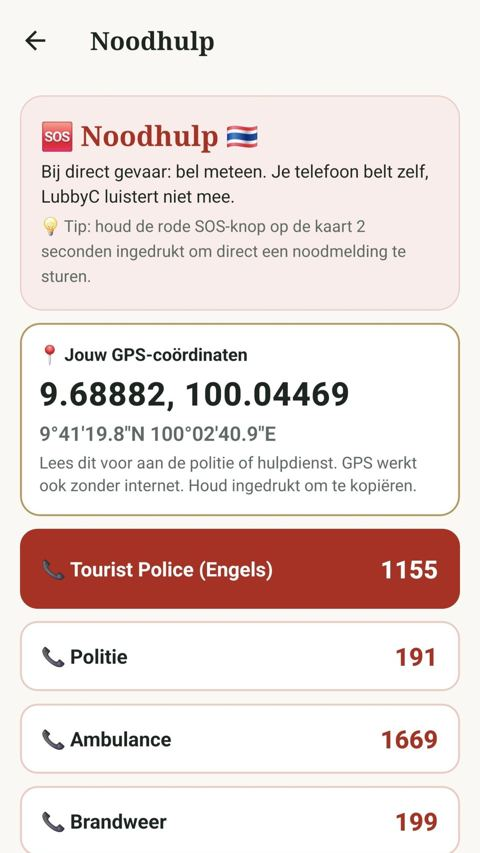

Wat kost een app laten maken in 2026?
Kort antwoord: bij Nederlandse bureaus en freelancers betaal je voor een eenvoudige app meestal €5.000 tot €25.000. Bij Collens Group begint een Basis-app bij €3.150 en een complete app met accounts en database bij €6.750. Alle prijzen zijn eindprijzen, er komt geen btw bij. Hieronder vind je de kosten per functie, een rekenvoorbeeld, de totale kosten over 3 jaar en een checklist om offertes te vergelijken.


Bijgewerkt op 22-11-2026 · Geschreven door Jeffrey Collens, oprichter van Collens Group. Opgesteld met hulp van AI-tools en door Jeffrey gecontroleerd.
Bereken direct wat jouw app kost
Marktprijzen in Nederland
| Soort app | Markt (NL) | Doorlooptijd |
|---|---|---|
| Eenvoudige app / MVP | €5.000 – €25.000 | 2 – 3 maanden |
| Gemiddelde app | €25.000 – €75.000 | 3 – 6 maanden |
| Complexe app | €75.000 – €150.000 | 6 – 9 maanden |
Bron: Searchlab, Wat kost een app laten maken (2026).
Bron marktprijzen: Searchlab, Wat kost een app laten maken (2026). Onze prijzen zijn eindprijzen: er komt geen btw bij.
Doorlooptijd in weken. Marktcijfer: Searchlab (2026).
Uurtarieven van ontwikkelaars lopen in Nederland sterk uiteen. Het gemiddelde uurtarief van een zzp software developer ligt in 2026 rond €94 zonder btw (Knab Zzp Uurtarievenboekje 2026). Ons uurtarief is €67,50.
Freelancer, bureau of zelf bouwen?
| Aanpak | Eenvoudige app |
|---|---|
| No-code bouwer (zelf) | €500 – €10.000 |
| Freelancer of bureau (NL) | €5.000 – €25.000 |
| Collens Group Basis / MVP | vanaf €3.150 |
Bedragen no-code en freelancer/bureau: Searchlab (2026), zie hierboven.
Onze vaste prijzen
Basis / MVP
Je idee snel testen met echte gebruikers.
- Tot 5 schermen
- Eenvoudige navigatie en content
- Strak basisontwerp
- Publicatieklaar voor iOS of Android
Klaar in 3–5 weken
Standaard
Een complete app voor je klanten of team.
- 5 tot 12 schermen
- Accounts en inloggen
- Eigen database en API-koppelingen
- Pushmeldingen
- Live in App Store én Google Play
Klaar in 6–10 weken
Maatwerk / Pro
Een volledig digitaal platform.
- 12+ schermen en complexe flows
- Uitgebreide backend en beheerdashboard
- Betalingen en abonnementen
- Meerdere gebruikersrollen
- Extra beveiliging
Klaar in 10–16+ weken
Welke kosten komen erbij?
Dit zijn de kosten die je naast de bouw rechtstreeks betaalt. Ze staan altijd vooraf in onze offerte.
| Kostenpost | Bedrag |
|---|---|
| Apple Developer Program | $99 per jaar |
| Google Play-account | $25 eenmalig |
| Database en hosting (bijv. Supabase) | gratis tot $25 per maand voor de meeste kleine apps |
| Onderhoud (optioneel) | vanaf €85,50 per maand |
Supabase-prijzen: supabase.com/pricing.
Wat bepaalt de prijs van een app?
- Aantal schermen en functies. Elk extra scherm of elke koppeling kost bouw- en testtijd.
- Accounts en data. Inloggen, profielen en een eigen database maken een app een stuk groter.
- Betalingen. Voor digitale abonnementen in een app gelden de betaalregels van Apple en Google.
- Ontwerp. Standaard componenten zijn sneller dan een volledig eigen ontwerp.
- Eén of twee platforms. Met React Native bouw je iPhone en Android tegelijk.
Wat kost een functie? Uren en prijs per onderdeel
Een offerte is eigenlijk een optelsom van uren. Daarom zie je hieronder per veelgevraagde functie hoeveel bouw- en testtijd die ongeveer kost. Zo kun je zelf narekenen of een offerte redelijk is, ook die van een ander bureau.
| Functie | Uren (inschatting) | Prijs bij €67,50 per uur |
|---|---|---|
| Inloggen met e-mail, Apple of Google | 8 – 16 | €540 – €1.080 |
| Profiel en instellingen | 6 – 12 | €405 – €810 |
| Pushmeldingen | 4 – 8 | €270 – €540 |
| Kaart met locaties | 8 – 16 | €540 – €1.080 |
| Koppeling met een bestaand systeem (API) | 8 – 24 | €540 – €1.620 |
| Betalingen of abonnementen in de app | 16 – 32 | €1.080 – €2.160 |
| Chat tussen gebruikers | 24 – 40 | €1.620 – €2.700 |
| Beheerdashboard voor jezelf | 24 – 48 | €1.620 – €3.240 |
| Extra taal (per taal) | 2 – 4 | €135 – €270 |
Inschatting van Collens Group op basis van eigen projecten, zoals onze reisapp LubbyC. Bij andere bouwers verschillen de uren per team. Bij een uurtarief van €94, het gemiddelde voor zzp-developers volgens Knab (2026), liggen de bedragen ongeveer 40% hoger.
Rekenvoorbeeld: een reserveringsapp voor een salon
Stel: een kapsalon wil een app waarin klanten een afspraak maken, een herinnering krijgen en hun eerdere afspraken terugzien. Dan heb je ongeveer dit nodig:
- 8 schermen: start, behandelingen, kalender, bevestigen, mijn afspraken, profiel, inloggen, instellingen
- Inloggen en een eigen database met afspraken
- Pushmeldingen als herinnering
- Live in de App Store en Google Play
Dat past in ons Standaard-pakket vanaf €6.750, klaar in 6 tot 10 weken. Wil de salon ook vooraf laten betalen en zelf de agenda beheren in een dashboard, dan komt daar volgens de tabel hierboven ongeveer €2.700 tot €5.400 bij, of je kiest direct Maatwerk vanaf €13.050. Bij een gemiddeld Nederlands bureau valt zo'n app volgens de marktprijzen bovenaan in de klasse €25.000 – €75.000.
Wat kost een app over 3 jaar?
De bouwprijs is maar een deel van het verhaal. Na de lancering betaal je store-accounts, hosting en meestal onderhoud. Bureaus rekenen voor onderhoud vaak 15 tot 20% van de bouwprijs per jaar (Searchlab, 2026). Hieronder zie je wat dat over 3 jaar betekent.
| Over 3 jaar | Basis-app (Collens) | Standaard-app (Collens) | Gemiddelde app (markt) |
|---|---|---|---|
| Bouw | €3.150 | €6.750 | €25.000 |
| Onderhoud | €3.078 (36 × €85,50) | €3.078 (36 × €85,50) | €11.250 – €15.000 (15–20% per jaar) |
| Hosting en database | meestal gratis | tot $900 (36 × $25) | afhankelijk van de app |
| Apple en Google | $297 + $25 | $297 + $25 | $297 + $25 |
| Totaal (zonder dollars) | €6.228 | €9.828 | €36.250 – €40.000 |
Onderhoud is bij ons niet verplicht; zonder onderhoud betaal je alleen de bouw, de store-accounts en eventueel hosting. Bedragen in dollars rekenen Apple, Google en Supabase zelf af in je eigen account. Marktbedragen: Searchlab (2026), zie hierboven.
Wat kost een iPhone-app of een Android-app?
Voor de bouw maakt het bij ons niet uit: met React Native maken we één app die op iPhone én Android draait. Het verschil zit in de stores en in het testen.
| iPhone (App Store) | Android (Google Play) | |
|---|---|---|
| Account | $99 per jaar | $25 eenmalig |
| Controle voor publicatie | Elke versie wordt door Apple beoordeeld | Elke versie wordt door Google beoordeeld; nieuwe persoonlijke accounts moeten eerst een gesloten test doen |
| Commissie op verkopen in de app | 15% of 30%, afhankelijk van omzet en soort aankoop | 15% of 30%, afhankelijk van omzet en soort aankoop |
Bronnen: Apple Developer Program, Google Play Console, Google Play servicekosten.
Wil je alleen op één platform beginnen? Dat kan in het Basis-pakket. Later voegen we het andere platform toe zonder de app opnieuw te bouwen.
Wat kost een zakelijke app of bedrijfsapp?
Een bedrijfsapp is een app voor je eigen team of je klanten: denk aan werkbonnen invullen, uren registreren, een klantportaal of een spaarkaart. Zulke apps hebben bijna altijd accounts, een database en vaak een koppeling met een systeem dat je al gebruikt. Daarom vallen ze meestal in ons Standaard-pakket (vanaf €6.750) of in Maatwerk (vanaf €13.050) als er meerdere gebruikersrollen en een beheerdashboard bij komen.
Een interne app hoeft niet altijd in de openbare stores. Voor een klein team kan een webapp, die je opent in de browser en op je beginscherm zet, goedkoper zijn. In het gratis concept adviseren we welke vorm het best past. Alles over prijzen en voorbeelden lees je op bedrijfsapp laten maken.
Offertes vergelijken: zo weet je of een prijs klopt
Heb je meerdere offertes? Vraag bij elke offerte naar deze punten:
- Uren per onderdeel. Een totaalbedrag zonder uitsplitsing is niet te vergelijken. Leg de uren naast de tabel hierboven.
- Wat er niet in zit. Store-accounts, hosting, teksten, ontwerp en het aanmelden in de stores worden vaak apart gerekend.
- Wie de code en de accounts bezit. Zorg dat de app en de store-accounts op jouw naam staan.
- Onderhoud na de lancering. Vraag wat updates voor nieuwe iOS- en Android-versies kosten en of onderhoud verplicht is.
- Meerwerk. Spreek af dat extra werk alleen na jouw akkoord en tegen een vooraf bekend tarief gebeurt.
Een offerte die veel lager is dan de rest kan kloppen, maar vraag dan naar referenties of een eerder gebouwde app die je zelf kunt downloaden. Onze eigen apps staan op deze pagina.
Zo bespaar je op je app
- Begin met een MVP: alleen wat gebruikers echt nodig hebben.
- Kies één codebase voor iPhone en Android.
- Gebruik bestaande diensten voor betalingen, inloggen en hosting in plaats van alles zelf te bouwen.
- Leg vooraf vast wat wel en niet in de prijs zit.
Zo ziet een app van ons eruit


Veelgestelde vragen over app-kosten
Wat kost een simpele app?
Bij Nederlandse bureaus en freelancers kost een eenvoudige app of MVP volgens kostengidsen €5.000 tot €25.000. Bij Collens Group begint een Basis-app met maximaal 5 schermen bij €3.150, een eindprijs zonder btw erbij, en is hij in 3 tot 5 weken klaar. Daarnaast betaal je de store-accounts zelf: Apple rekent $99 per jaar en Google eenmalig $25. Je krijgt eerst een gratis concept, daarna een vaste prijs.
Wat kost een app per jaar aan onderhoud?
Dat hangt af van hoeveel er na de lancering nog verandert. Bij ons is onderhoud een vast maandbedrag. Onderhoud Basis kost €85,50 per maand, met monitoring, kritieke fixes en updates voor nieuwe iOS- en Android-versies. Wil je de app blijven verbeteren, dan kies je Groei & Support voor €265,50 per maand, met tot 4 uur aanpassingen en voorrang bij storingen. Daarnaast betaal je zelf het Apple Developer-account ($99 per jaar) en eventueel hosting. Onderhoud is niet verplicht.
Wat kost een MVP-app laten maken?
Bij Collens Group begint een MVP (Basis-pakket, tot 5 schermen) bij €3.150 (geen btw erbij) en is hij klaar in 3–5 weken. Accounts, een database of betalingen vallen onder het Standaard-pakket vanaf €6.750.
Is een app voor iPhone én Android duurder?
Bij aparte native apps vaak bijna het dubbele, omdat er dan twee apps los van elkaar worden gebouwd en onderhouden. Wij bouwen met React Native: één codebase die op iPhone én Android draait. Daardoor betaal je niet twee keer voor hetzelfde werk en zijn latere aanpassingen ook in één keer voor beide platforms klaar. Wel betaal je voor beide stores een eigen account.
Wat kost een app per maand?
Na de bouw zijn de vaste kosten vaak laag. Apple rekent $99 per jaar (ruim $8 per maand), Google eenmalig $25 en hosting is voor de meeste kleine apps gratis tot $25 per maand. Kies je ons onderhoud, dan komt daar €85,50 per maand bij voor Onderhoud Basis of €265,50 per maand voor Groei & Support. Onderhoud is niet verplicht.
Kost het geld om een app in de App Store of Google Play te zetten?
Ja, maar weinig. Voor de App Store heb je het Apple Developer Program nodig van $99 per jaar. Voor Google Play betaal je eenmalig $25. Het aanmelden en klaarzetten van je app in beide stores doen wij en zit in onze pakketten. Verkoop je digitale producten of abonnementen in de app, dan houden Apple en Google daar 15% of 30% commissie op in.
Wat kost een game-app laten maken?
Een eenvoudige game voor de browser of telefoon begint bij ons bij €1.950. Een uitgebreidere game met meerdere levels, eigen tekeningen en geluid kost meer, afhankelijk van de inhoud. Op de pagina game laten maken staan de pakketten en voorbeelden, waaronder ons eigen spel Eiland Express.
Hoe vraag ik een offerte voor een app aan?
Beschrijf in een paar zinnen wat de app moet doen en voor wie hij is, via het formulier onderaan deze pagina. Binnen 48 uur krijg je een paar korte vragen en daarna een gratis concept met een vaste prijs, uitgesplitst per onderdeel. Je zit nergens aan vast tot je akkoord geeft. Wil je eerst zelf een indicatie, gebruik dan de kostencalculator.
Zie ook: MVP-app laten maken · App voor horeca · Website laten maken · Webshop laten maken · AI-chatbot laten maken · Onze eigen apps en games